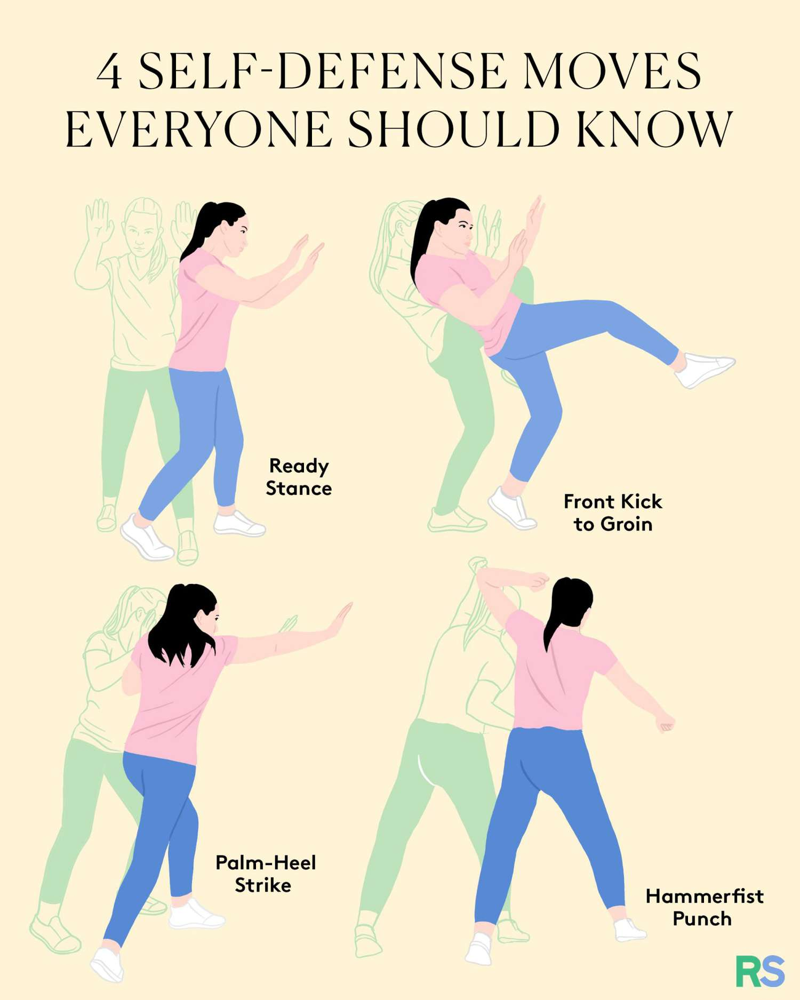
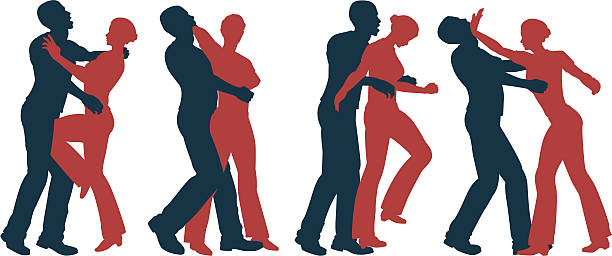
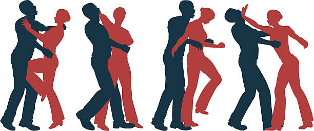

5 Powerful Self-Defense Techniques for Women
 

While no one is ever to blame for being targeted for violence, it's essential for women to know how to protect themselves. Here are some powerful self-defense techniques to help you stay safe:
Key Techniques:
- Know the Human Body: Familiarize yourself with the weak points of the human body. These include the eyes, nose, and throat. Other weak points include the solar plexus, groin, and knees.
- Learn Basic Moves: Use palm heel strikes, eye strikes, knee strikes, and elbow jabs to disable attackers. Practice these moves to ensure you can execute them effectively in a high-stress situation.
- Drop Low: If grabbed from behind, drop your center of gravity to throw the attacker off balance. This can create an opportunity for you to break free.
- Use Your Head: Use your forehead or throw your head back into the attacker to create distance. This technique can help you escape a grab or hold.
- Arm Yourself: Carry pepper spray, a whistle, or other self-defense tools. Be aware of the legal restrictions on some weapons in your area and ensure you know how to use them effectively.
Additional Techniques:
- Use Your Elbows and Knees: These parts of the body can deliver powerful strikes when used correctly. Aim for the attacker's vulnerable areas to maximize impact.
- Practice Self-Defense Moves: Regular practice of self-defense techniques is crucial. Consider joining a self-defense class or workshop to refine your skills and boost your confidence.
- Utilize Everyday Items: Items such as keys, pens, or a handbag can be used as improvised weapons. Be creative and use whatever you have on hand to protect yourself.
- Employ Defensive Stances: Learn and practice defensive stances that can help you maintain balance and prepare for potential attacks. These stances can also help you move quickly and effectively.
Safety Tips:
In addition to learning self-defense techniques, it's important to adopt general safety practices to reduce the risk of encountering dangerous situations:
- Be Aware of Your Surroundings: Stay alert and pay attention to your environment. Avoid distractions and remain vigilant in unfamiliar or potentially risky situations.
- Trust Your Instincts: If you feel uncomfortable or sense that something is wrong, take action to protect yourself. Your instincts can often guide you to safety.
- Develop a Safety Plan: Create a plan for various scenarios, such as what to do if someone follows you or how to get help in an emergency. Share this plan with friends or family members.
Resources and Further Reading:
Explore these resources to deepen your knowledge of self-defense:
Comprehensive Guide to Self-Defense TechniquesSafety Tips for Women